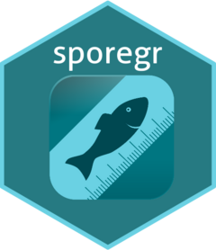

Function reference
-
APEX_options() - Set or get options for reading APEX Spöreg data
-
calc_date_breaks() - calc_date_breaks
-
fix_fangst_missing_fangstdattid() - Fix missing datetime on fangster
-
integer_breaks() - integer_breaks
-
minutes2HHMM() - Minutes to HH:MM
-
read_anvlista() - Read a file with registered sporeg users
-
read_fangst_clean() - Read a file with APEX export of fångster from Spöreg database and do some cleanup
-
read_ovrighandelse_clean() - Read a file with APEX export of Övrighändelse from Spöreg database and do some cleanup
-
read_resa_clean() - Read a file with APEX export of resor from Spöreg database and do some cleanup
-
sporegApp() - sporegApp
-
sporeg_bbox() - sporeg_bbox
-
sporeg_points() - sporeg_points